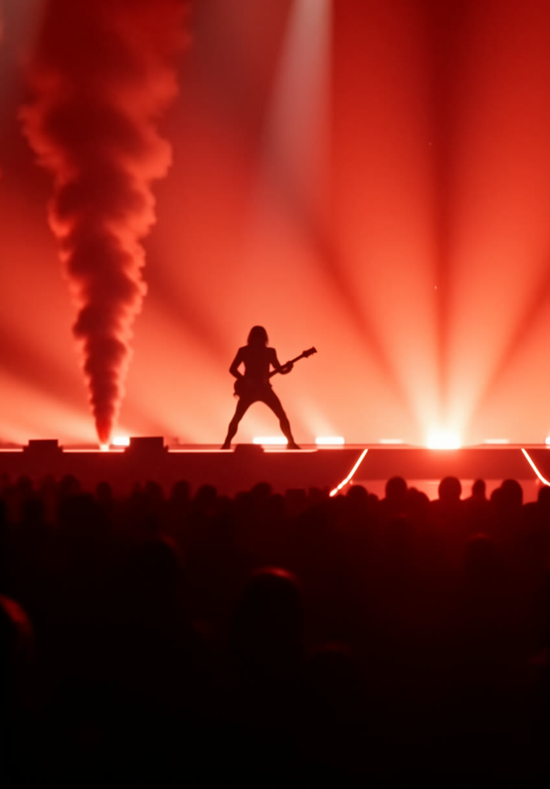
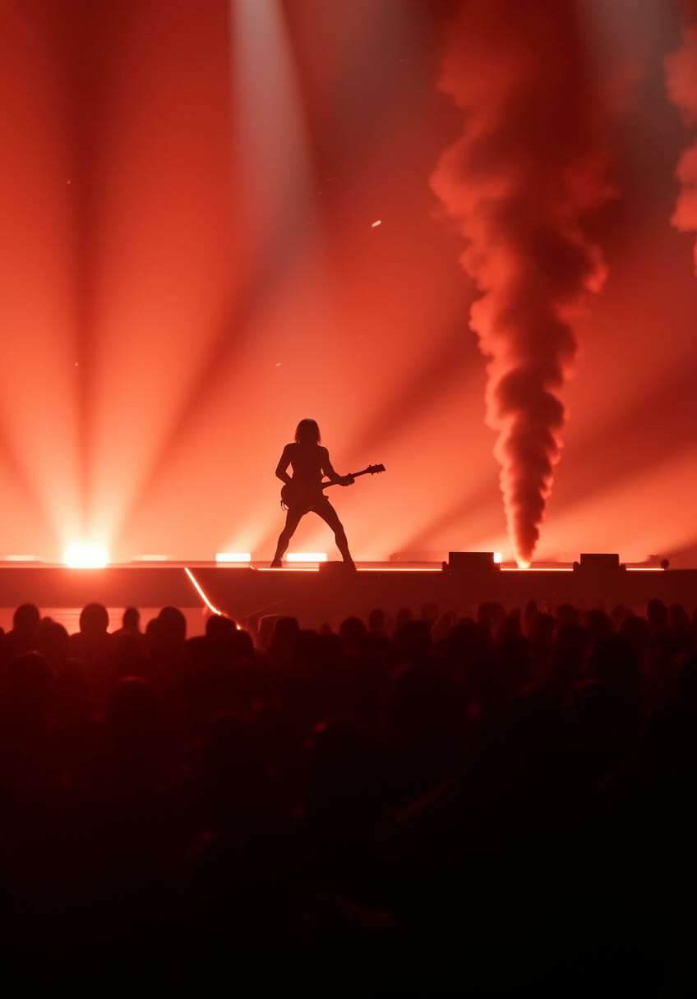

A
A&R started in 2021 in a windowless practice room off Vista Avenue — two amps, two guitars, a space heater, and a pact: never add a third human, never add a backing track. Just two guitars and two voices, and it has to earn its place every night.


“Boise gave us space. The desert gave us patience. The crunch pedal gave us everything else.” — ROBYN